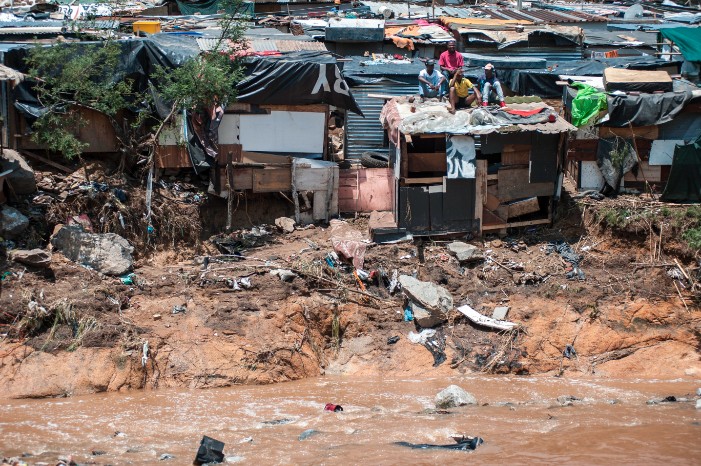
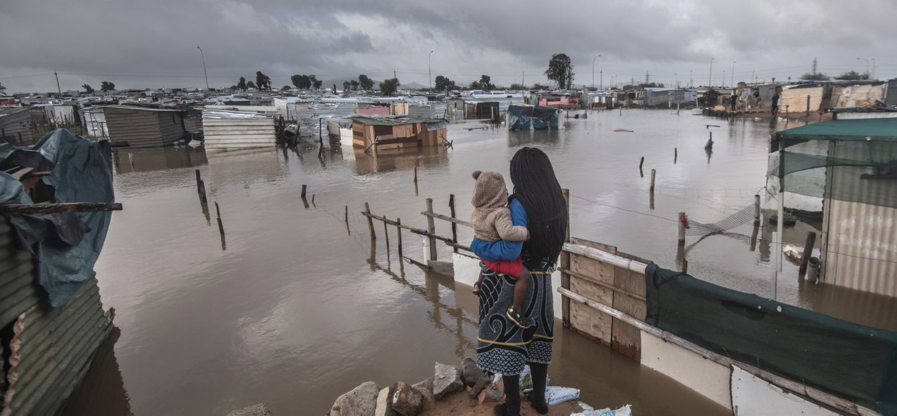

Applying RS to Climate Policy in South Africa
Flooding in Informal Settlements
South Africa’s informal settlement landscape, in which over 5 million people live, is extremely complex, and largely a byproduct of historical spatial inclusion, rapid urbanization, severe shortage of affordable formal housing, and high levels of corruption in government (Amnesty International, 2025). Land on floodplains or alongside steep riverbanks is not suitable for formal development due to safety and insurance regulations. However, in many of the country’s metro cities (like Durban, Cape Town and Johannesburg), these areas which are ‘unsuitable’ for formal development often end up being occupied by poorer communities because of a lack of affordable and accessible housing, and sometimes as a means of accessing the nearby urban economies. In addition, complete lack of municipal infrastructure in informal settlements can drive people closer to rivers for sanitation and domestic use (washing clothes and cleaning). These communities are among the most vulnerable groups in the country in terms of flooding risk and climate-driven disasters.


Relevant Policies
South African Legislation has recently shifted toward a more proactive, data-driven, planning approach to managing climate risks like flooding. I am going to discuss two policy documents and the potential role of remote sensing in implementing them.
Global-level
1. UN Sustainable Development Goals
The most relevant UN SDGs here are:
No poverty
Target 1.5: By 2030, build the resilience of the poor and those in vulnerable situations and reduce their exposure and vulnerability to climate-related extreme events and other economic, social and environmental shocks and disasters
Clean water and sanitation
Target 6.1: By 2030, achieve universal and equitable access to safe and affordable drinking water for all
Target 6.2: By 2030, achieve access to adequate and equitable sanitation and hygiene for all and end open defecation, paying special attention to the needs of women and girls and those in vulnerable situations

National-level
2. Climate Change Act (2024)
The Climate Change Act is a national act specifically mandating that provinces and municipalities “must identify and spatially map, within the sphere of operations of the province, district or metropolitan municipality, as the case may be, risks, vulnerabilities, areas, ecosystems and communities that will arise, or that are vulnerable to the impacts of climate change”.
The phrasing of this mandate is pretty typical of South African governance, which is notoriously vague about how acts should be implemented and who is going to implement them. This ultimately leads to each level of government passing the responsibility to another, with the result being little to no action from anyone.
3. White Paper for Human Settlements (2025)
The White Paper for Human Settlements policy document states that “government will endeavour to integrate climate resilience and sustainable development approaches into the planning, design, construction, and operation of human settlements in an effort to avoid the devastating impacts of climate change”.
Interestingly, this policy specifically mentions the integration of “innovative systems” and “new technologies” to achieve its goals, but at no point specifies what is meant by this.
Local-level
4. City of Johannesburg Spatial Development Framework 2040
The City of Johannesurg Spatial Development Framework (SDF) is a policy document that guides spatial planning and land use decisions for the municipality. The SDF recognizes that “many of Johannesburg’s poor residents live in informal settlements … located in high-risk locations (such as flood plains) and often with minimal bulk and public services, such as waste collection and management, public transport, access to potable water, sanitation, and health facilities”. The document reiterates other local and national policies, highlighting that “in-situ upgrading of informal settlements should be the first option for intervention, with relocation only applied where upgrades are not possible or desirable for the community in question”.
At no point are the two points linked, and the only mention of how this will be implemented is to “plan natural buffer zones in disaster-prone areas, protecting against flooding.
Using Remote Sensing
Remote sensing could be used by the City of Johannesburg to achieve the goals that these policies set out. This would involve:
Mapping “Vulnerable Communities”:
I would use Sentinel-2 (10m) imagery to calculate the Normalized Difference Built-up Index (NDBI) along major rivers that run through informal settlements. By comparing imagery from different time periods, we can detect areas of “unmanaged expansion” which are edging towards river buffers.

Landsat / Copernicus Imagery of Informal Settlements alongside the Jukskei River, Johannesburg (Google Earth) Because floods often occur under heavy cloud cover, I would use Sentinel-1 (Synthetic Aperture Radar which penetrates clouds to map the reflection of water) to map the extent of historical floods.

By overlaying SAR-derived flood footprints onto the current informal settlement map, we can identify which households are at the highest risk.
Informal settlement growth detection:
PlanetScope provides daily 3-meter resolution imagery, with which we can apply an automated Machine Learning (ML) classifier to automatically “flag” new shack footprints as they appear in high flood-risk zones.
Reflections
While municipalities do undergo enumeration and profiling to manage informal settlements, these manual interventions are completed nowhere near as often as they should be. On-top of that, the sheer number of vulnerabilities faced by people living in informal settlements (eg lack of sanitation and drinking water, heat stress, flood risk etc) makes it impossible for local governments to capture the real-time complexities faced by these areas with just ground surveys.
This is where remote sensing comes in by allowing for mapping of vulnerable communities at scale. It allows for automated, regular monitoring of informal settlement expansion into high-risk zones - this could be every couple of days for rapidly growing informal settlements.
This would provide municipalities with valuable and indisputable information to guide intervention efforts - such as how many homes are vulnerable to floods and exactly where these communities are located. However, the kinds of “interventions” that might take place could be potentially problematic.
On the one hand, this would provide an evidence-base which encourages government, municipal and private funding and infrastructure development in informal settlements, through in-situ upgrading like that mentioned in the Johannesburg SDP.
On the other hand, it is likely that mapping these vulnerable communities will lead to near-immediate forced relocation because the government might view upgrades as “not possible or desirable for the community in question”. While this might sound like a good thing (who wants to live next to a river at high risk of flooding, right?), the reality is a lot more nuanced. Relocations might resolve flood vulnerabilities but increase socio-economic vulnerabilities (for example, people might not be able to access their jobs anymore).
This is a really challenging trade-off. At the beginning of this task, I thought this would be a great way to integrate remote sensing into policy. But the more I think about it more deeply the more I realize that my approach was pretty flawed. When I started, the ‘end result’ in my mind was the data - a map of vulnerable communities in informal settlements. In reality, the ‘end result’ should have carefully considered the consequent action - what interventions will take place using the information from the map? Even though the resulting data is largely objective, the implications of it are highly political.